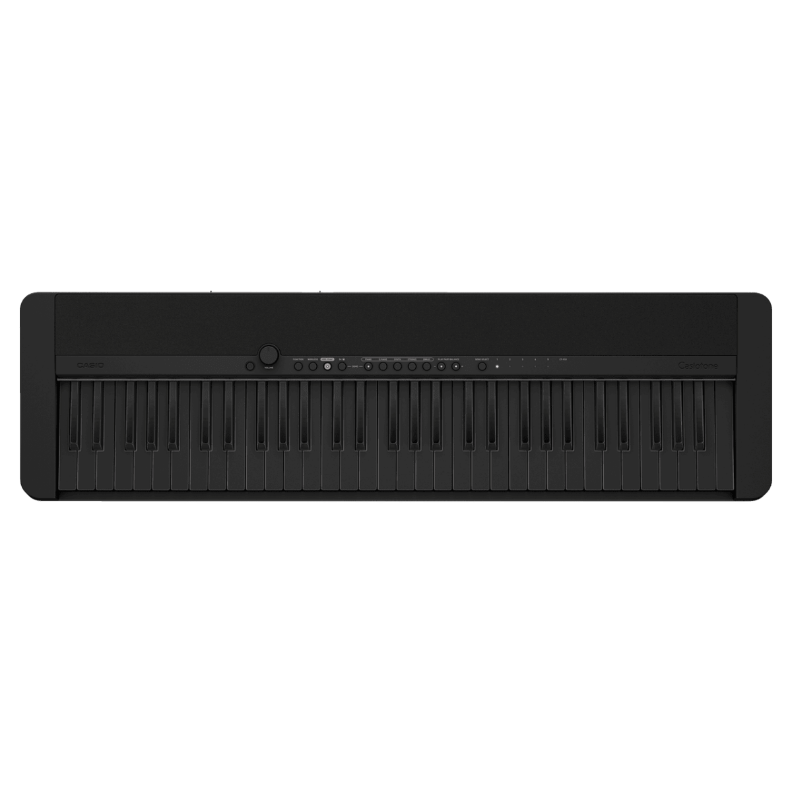

科技產品 T1
DeepSeek 開源 SuperAgent 研究原型，公開具授權邊界的主動編程代理架構
發佈時間
DeepSeek Harness Team／dsh-superagent-prototype
DeepSeek公開供研究參考的主動編程代理實作，將授權請求、工作項目、獨立執行環境與回覆串連起來；README特別提醒這不是正式DeepSeek產品。
- 專案以MIT授權公開；官方提醒可能含有錯誤，發布版也不必然等同內部全部實作。
- 工作項目可使用自己的session和目錄，完成後回覆原始討論串或提供PR；飛書整合是可選項。
- observe是推斷任務的預設模式，只記錄判斷而不接單；auto仍須匹配授權規則，引用文字不會自行取得權限。
完整報告收合報告
事件背景與影響
開源內容讓開發者檢查代理如何持續工作及限制權限，而不是只能依賴展示影片推測其自主程度。採用前仍須審查程式碼、執行環境及各工具的存取權。
事件與發佈依據
官方repo建立於10/31、唯一初始提交亦為當日；不以11/2中文報導日期充當首次發布日。
收錄紀錄
10/20至11/2十四份日報與同範圍產品表均無相同原型發布；不是先前搜尋API的續報。
尚待確認
repo建立和commit時間不能證明精確對外公開秒數，故只列日期；不宣稱這是可直接部署的成熟服務，也沒有本機執行或效能實測。
相關實體與概念
DeepSeek、SuperAgent、Harness、MIT、主動代理、權限治理。
科技產品 T2

CT-FS1BK官方產品圖，非演奏效果實測。 Casio
Casio 發表 CT-FS1 電子琴，Feel Sync 讓初學者跟隨本機歌曲和聲演奏
發佈時間
Casio／CASIOTONE CT-FS1BK、CT-FS1WE、Feel Sync
CT-FS1保留CT-S1系列的核心設計，加入全黑、全白外觀與Feel Sync配套功能，分析手機上的歌曲檔案，讓按鍵演奏配合音樂和聲。
- 官方歐洲建議售價399歐元，含Bluetooth轉接器；新聞稿預告2026年11月供貨。
- FeelSync使用裝置本機WAV、AIFF或MP3音檔，不支援直接把串流音樂服務當歌曲來源。
- 歐洲App預計11/11上線，部分國家較晚；透過WU-BT10無線MIDI／音訊轉接器連接。
完整報告收合報告
事件背景與影響
這是降低參與伴奏門檻的樂器功能，而不是單純換色。真正使用條件包括配套App、轉接器、支援檔案及地區上線時間，不能只看「不會彈錯」的宣傳措辭。
事件與發佈依據
Casio義大利新聞稿10/30發布，列出11月供貨安排；歐洲產品頁另列FeelSync應用程式11/11起在指定市場上線。
收錄紀錄
十四份日報查無CT-FS1或Feel Sync；同窗32列產品表也無此項。採用新品與功能發布，不把媒體評測或促銷當首發。
尚待確認
價格與時程是歐洲官方資訊，不代表台灣售價或供貨日；自動適配和聲是廠商功能說明，並非獨立測試證明能取代樂理學習。美國官方頁存取受限。
相關實體與概念
Casio、Casiotone、CT-FS1、Feel Sync、MIDI、和聲辨識。
全球焦點 1
比利時預算談判破裂，首相德維弗向國王提出辭職
發佈時間
比利時五黨執政聯盟無法就預算達成共識，首相Bart De Wever提出辭職。國王Philippe仍在考慮，並安排進一步政治磋商。
- 談判涉及約100億歐元的支出節省及稅收安排。
- 聯盟對醫療支出與財富課稅等議題存在分歧。
- 王室安排與政黨領袖磋商，後續仍有挽救協議的可能。
完整報告收合報告
事件背景與影響
財政整頓與聯盟分歧進入政府存續程序，可能影響預算執行與政策確定性；但提出辭職不等於國王已接受，也不代表提前選舉已確定。
事件與發佈依據
Reuters報導11/2早上提出辭職；Euronext轉載同日，頁面時區未明故保留日期。
收錄紀錄
最近十四份日報未收錄本次預算談判破裂及辭職程序。
尚待確認
截點時辭職尚非已獲接受的既定結果；談判內容及政黨立場可能繼續變動。
相關實體與概念
比利時、Bart De Wever、Philippe、聯合政府、財政預算。
全球焦點 2
烏克蘭救援機關稱俄軍轟炸援助中心與避難處，至少二十六人死亡
發佈時間
烏克蘭國家緊急服務機關表示，札波羅熱州Komyshuvakha一所兼作援助發放點的學校遭空襲，後續避難處亦遭攻擊，死亡人數升至至少26人。
- 烏方救援機關通報死者包含兩名救援人員與四名警員。
- 澤倫斯基稱第一波攻擊後，另有九枚航空炸彈攻擊民眾躲藏處。
- 早期Reuters及其他報導為24死，較晚且仍在截點前的報導修正為26死。
完整報告收合報告
事件背景與影響
援助據點與救援人員遭受攻擊，增加前線平民領取物資及搜救的風險；死亡數字仍須與持續搜救進度分開理解。
事件與發佈依據
11/2在Komyshuvakha發生新一輪空襲；Kyiv Independent初發18:32:26Z、同日21:04:12Z更新至26死，兩者均在窗內。
收錄紀錄
十四份日報未收錄11/2這次援助發放地點與避難處遭襲事件。
尚待確認
傷亡與攻擊細節依烏方通報，尚未獨立完整核實；數字仍可能變動。不能把不同時點的24與26視為同一時間的兩份最終統計。
相關實體與概念
烏克蘭、俄羅斯、札波羅熱、Komyshuvakha、DSNS、人道援助。
全球焦點 3
歐洲多國超市冷藏設備遭駭，業者被迫丟棄食品
發佈時間
從瑞典到比利時、盧森堡與愛爾蘭，多家零售商的冷藏或冷凍設備受到未授權操控，溫度異常迫使店家撤下或銷毀食品。
- 受影響業者包含ICA、Coop、Ahold Delhaize、Colruyt及至少一家IKEA門市。
- 一家ICA加盟店向Reuters描述冷凍設備升至50度；這不是全體門市的共同量測值。
- 愛爾蘭Musgrave表示13家SuperValu受影響；業者已移除部分冷藏與冷凍商品。
完整報告收合報告
事件背景與影響
資安事件直接造成實體食品損失，突顯遠端控制器與店內設備管理的暴露風險。不同品牌、供應商與門市是否具有共同漏洞仍須調查。
事件與發佈依據
Reuters 11/2 04:27 EST首發；業者描述當日凌晨設備異常及當日處置，並非重刊上月法國事件。
收錄紀錄
十四份日報未收錄本輪跨國超市冷藏設備受攻擊事件。
尚待確認
Reuters未能確認行為者，也無法證實與上月法國事件或俄羅斯有關。不能將資安專家的動機推測寫成歸責結論。
相關實體與概念
冷鏈、工業控制、零售資安、ICA、Coop、SuperValu。
全球焦點 4
俄烏警報 App 遭植入假訊息，烏方開始恢復服務並重申主警報系統正常
發佈時間
烏克蘭Air Alert與俄羅斯緊急事務部App被用來發送核攻擊等假訊息。烏方開發者週一開始逐步恢復功能，俄方亦確認其App遭駭。
- 烏方停用推播後逐步恢復；地圖上的來襲威脅顯示仍暫停。
- 烏方表示全國警報基礎設施與另行運作的Kyiv Digital未受影響。
- The Record記者實際收到假通知；不同駭客團體的認領仍非獨立歸責證據。
完整報告收合報告
事件背景與影響
這類攻擊破壞民眾對救命通知的信任。單一App出問題與全國實體警報網失效並非同一件事，需避免擴大恐慌。
事件與發佈依據
初始假警報出現在11/1晚，屬背景；本則依11/2開發者恢復服務及俄方確認遭駭的新披露收錄，不將初次攻擊挪入時間窗。
收錄紀錄
十四日報未收錄相同App事件；今天選取的是週一確認與恢復狀態，不重述沒有時間依據的攻擊推測。
尚待確認
攻擊路徑及幕後關係未完全核實；不能據駭客自稱推論政府直接指揮。應以官方既有多重警報管道核對威脅。
相關實體與概念
Air Alert、Ajax Systems、EMERCOM、假警報、公共安全。
全球焦點 5
英國公布定居制度改革，預設等待十年並保留特定工作者較短途徑
發佈時間
英國政府公布以貢獻與品行為基礎的定居模式，一般預設等待十年，高收入者與符合資格的部分公共服務、照護工作者可走較短途徑。
- 最高收入者可適用三年；年收入逾50,271英鎊及部分公共服務人員可適用五年。
- 政府列出刑事紀錄、英語、欠稅與國民保險貢獻等必要條件。
- 符合原簽證條件且年收入至少25,000英鎊的照護工作者，公告保留五年定居安排。
完整報告收合報告
事件背景與影響
永久居留的時間與資格門檻影響雇主、人力留任與家庭規劃，但政策公告不是對每一簽證個案即刻生效的判定。
事件與發佈依據
英國內政部11/2公告並向國會提出earned settlement模式；不以頁面更新時刻虛構首次公布秒數。
收錄紀錄
十四份日報未收錄本次正式公布的定居制度及照護工作者安排。
尚待確認
各路徑、生效與過渡細節仍須依正式規則核對；不能把難民、一般工作簽證及已獲永久居留者混為一談。本則不提供個案法律建議。
相關實體與概念
英國內政部、earned settlement、永久居留、勞動移民。
全球焦點 6
烏干達確認首批駐索馬利亞部隊已返國，預計二〇二七年底完成撤軍
發佈時間
烏干達軍方表示已開始撤出依雙邊安排派往索馬利亞的部隊，首批人員已返國，之後將逐步撤出包括AUSSOM在內的所有部隊。
- 首階段是雙邊安排部隊，不是宣稱全部約4,500名AUSSOM官兵已撤離。
- 軍方規劃在2027年底前逐步完成所有撤軍。
- AUSSOM文件警告Lower Shabelle可能出現安全缺口；索馬利亞官員擔心突然撤離帶來問題。
完整報告收合報告
事件背景與影響
烏干達長期參與對青年黨作戰，實際撤軍進入執行階段，索馬利亞接管防務與維持補給的能力將受到考驗。
事件與發佈依據
Reuters經MarketScreener於11/2 22:54 AEDT發布；UPDF週一聲明確認雙邊安排部隊首批已返國。
收錄紀錄
十四日報中烏干達命中是伊波拉背景，不是本次撤軍確認；不把先前撤軍意向當作今天唯一新事實。
尚待確認
各階段確切人數及接防進度未完整公開；聯合國政治任務終止是另一制度安排，不能和非盟維和部隊合併計算。
相關實體與概念
烏干達、UPDF、索馬利亞、AUSSOM、青年黨、安全移交。
全球焦點 7
緬甸援助者週一披露週末空襲至少十五死，遇襲地點包括產科診所與學校
發佈時間
少數民族武裝、援助工作者與人權團體週一向Reuters表示，緬甸軍方週末多地空襲造成至少15人死亡，死者包含新生嬰兒與學生。
- 若開邦週日多地攻擊據報12死，傷亡依武裝組織及援助者說法。
- Mrauk U產科診所據報有一名出生約一週的女嬰死亡，其雙胞胎手足存活。
- 人權團體週一另披露Loikaw週六學校受襲、三名學生死亡。
完整報告收合報告
事件背景與影響
醫療與教育場所受襲增加民用設施風險；資訊取得困難，更需保留來源歸屬及尚未獨立驗證的限制。
事件與發佈依據
Internazionale的Reuters原文metadata為11/2 10:27:56Z；新聞基礎是週一新披露傷亡，空襲本身發生於較早週末，明確分開。
收錄紀錄
十四日報命中翁山蘇姬通話，與本次診所及學校受襲不同。
尚待確認
Reuters無法獨立核實所有死亡及攻擊細節；軍方支持政府未立即回應。不能將週末舊攻擊日期寫成11/2，也不把各來源說法當已完成調查。
相關實體與概念
緬甸、若開邦、Mrauk U、Loikaw、醫療保護、平民傷亡。
全球焦點 8
西班牙加那利群島外海救起逾三百八十人，至少七名移民在航程中死亡
發佈時間
西班牙救援機關週一在加那利群島周邊救起超過380人，一艘獲救船上發現兩具遺體，當局另表示五人在航程中死亡後落海。
- 一艘船在Lanzarote外約150公里獲救，救起132人並發現兩名死者。
- 當局稱同一航程另有五名死者已被拋入海中，不是七具遺體都已找到。
- 週一較早另救起250人；週日107人是前一天資料，不加進週一總數。
完整報告收合報告
事件背景與影響
大西洋移民航線航程長、海況危險；救援人數與死亡通報應分開，不能只用到岸人數判讀風險。
事件與發佈依據
Reuters 11/2 09:48 EST；西班牙海事救援機關週一確認當日救援與航程死亡情況。
收錄紀錄
十四份日報沒有本次11/2 Lanzarote與El Hierro救援事件。
尚待確認
未尋獲死者及航程敘述依當局調查；最終人數可能修正。不從單次事件推論全年流量已增加。
相關實體與概念
西班牙、加那利群島、Lanzarote、El Hierro、海難救援、移民。
全球焦點 9
續報｜中國民間製造業 PMI 為五十二，與先前官方調查呈現分化
發佈時間
中國民間製造業PMI從九月52.1微降至52.0，仍在擴張區間；出口訂單成長減速、廠商降價，反映與官方樣本不同的景氣輪廓。
- RatingDog十月PMI52.0，高於Reuters調查預估51.6；50是擴張與收縮分界。
- 新訂單指數53.3，前月53.4；出口訂單增速降至三個月低點。
- 產出增速為六個月最快，但出廠價格下跌，出口價格自2025年11月以來首次下降。
完整報告收合報告
事件背景與影響
官方與民間PMI涵蓋企業及權重不同，不應擇一數字代表整體經濟；兩份資料並讀，有助辨識產出與需求的分化。
事件與發佈依據
Reuters首發11/1 20:46 EST，即11/2 01:46Z；週一公布新的RatingDog／S&P Global十月調查，不以AOL較晚更新時間當首發。
收錄紀錄
2026-11-01已收錄官方PMI49.3；今天新增民間RatingDog PMI52.0、訂單與出口價格資料，並非重報同一調查。
尚待確認
PMI是擴散指標，不是產量年增率；52.0不能解讀為成長52%。官方與民間差異並不直接證明其中一份錯誤。
相關實體與概念
中國、RatingDog、S&P Global、製造業PMI、出口訂單。
全球焦點 10
紐西蘭提前投票累計逾九十一萬張，選前參與速度高於上屆同期
發佈時間
紐西蘭11月7日大選前，提前投票已累計913,762張，Reuters指出比2023年相同投票階段高約28%；這是參與進度，不是選舉結果。
- 選委會表格10/26至11/1總數為913,762。
- 10/31單日192,663張，11/1為132,912張。
- 正式投票日為11/7；截點時不能將尚未公布的11/2之後數字補入。
完整報告收合報告
事件背景與影響
提前投票影響選務資源與競選最後階段的接觸策略，但投票時間提前本身不能推導最終投票率或哪一政黨領先。
事件與發佈依據
Reuters 11/1 22:31 EST，即11/2 03:31Z；選委會當時表格累計10/26至11/1數字，11/2之後欄位仍空白。
收錄紀錄
十四份日報紐西蘭命中為軍首長辭職，不是本次選舉提前投票統計。
尚待確認
與上屆同期相比不是最終投票率比較，也不包含選民投票選擇。官方滾動頁日後會更新，本文保留截點所見數值。
相關實體與概念
紐西蘭選舉委員會、提前投票、2026大選、投票參與。
研究備註
時間、來源與後續追蹤
研究截點 2026-11-03 07:59:49（Asia/Taipei）
研究時間與範圍
研究截點：2026-11-03 07:59:49（Asia/Taipei）。全球新聞：2026-11-02 07:59:49 至 2026-11-03 07:59:49（Asia/Taipei）。科技產品：2026-10-20 07:59:49 至 2026-11-03 07:59:49（Asia/Taipei）。